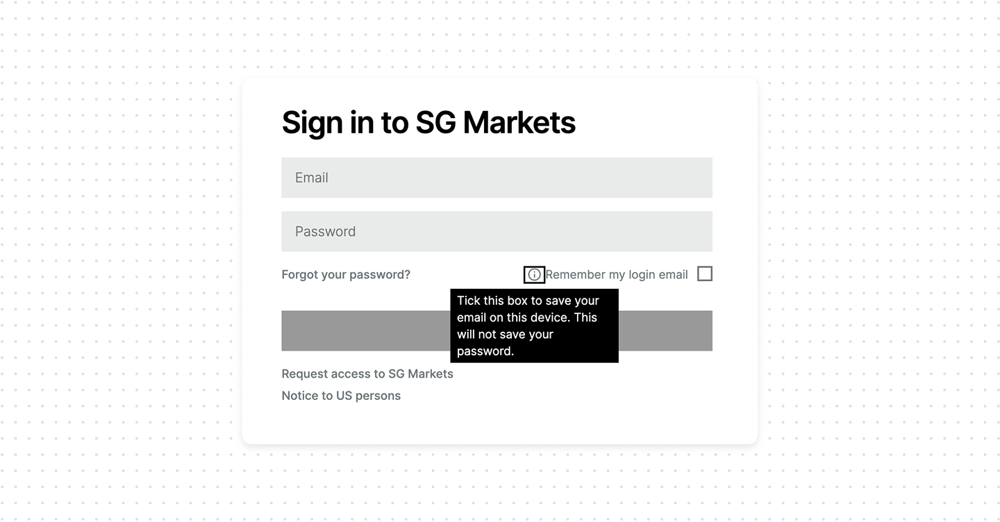
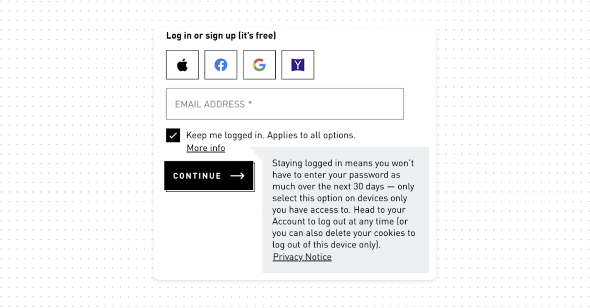
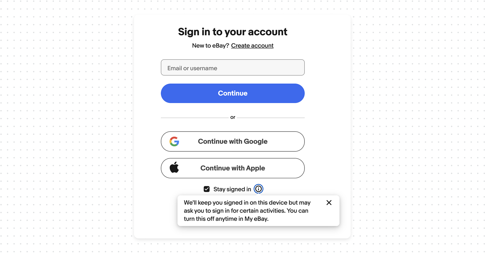
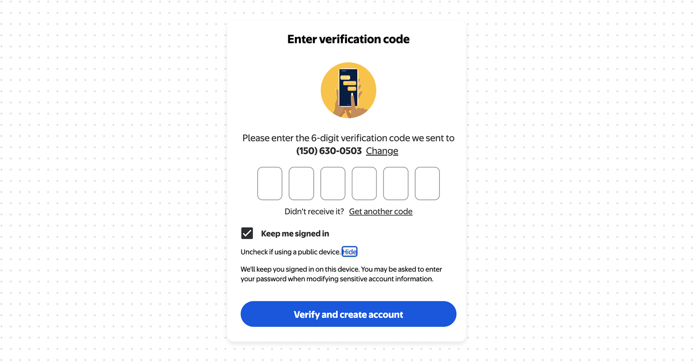
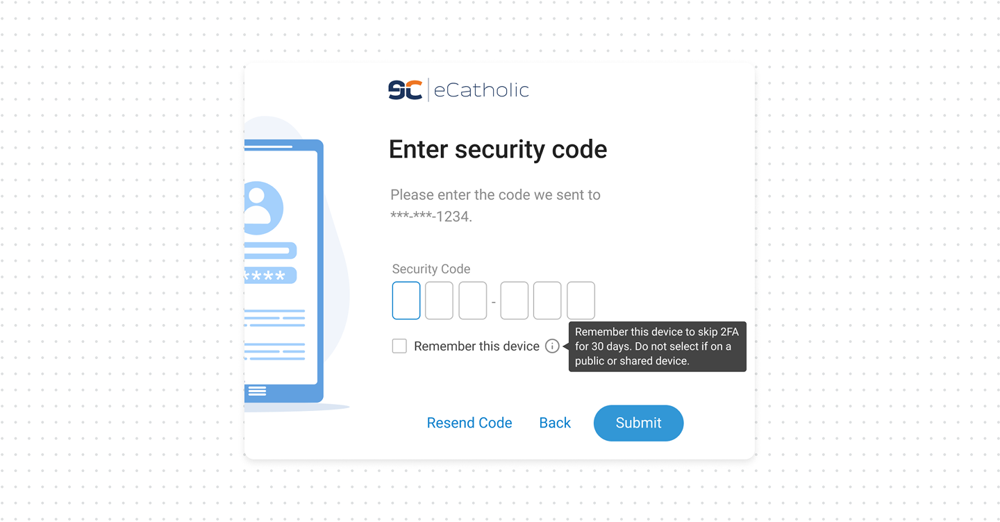
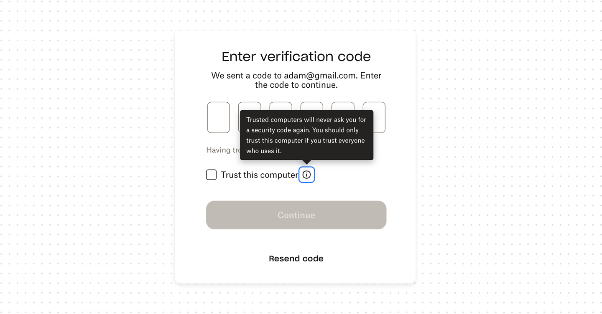

"Remember me", "Keep me signed in", and "Remember this device" aren't the same thing

Sviatoslav NytkaSenior Product Designer at TechMagic
TLDR: "Remember me", "Keep me signed in", and "Remember this device". They're constantly confused, by users and by the products labelling them. They do three different things with three different risk levels: remember your email, keep your session alive, or skip your MFA. Pick the right one, label it precisely, provide clear explanation, and never quietly default the risky ones on.
Here's the real problem in practice: in one product, "Remember me" only saves your email address. In another, "Remember me" silently keeps you signed in and provides no explanation. From the label alone, users can't tell the difference, so they can't make an informed choice. Many products use these labels interchangeably, but these actions are not the same.
- Remember me – saves the identifier. The original meaning, and the safest. It stores your email or username on the device so the field is pre-filled next time. The password is still required. Nothing that grants access is saved.
- Keep me signed in – keeps the session alive. Also seen as "Stay signed in". This persists your authenticated session well past the normal timeout, so closing the browser doesn't log you out. You skip re-authentication for days or weeks. Convenient, but now anyone with access to the device is already inside.
- Remember this device – skips MFA. Also "Trust this computer". This marks the device as trusted so your second factor isn't requested on future logins for some window, often 30 days. This is the one that turns off your strongest protection on that device.
What good UX looks like
- Use distinct, accurate labels. Don't call session persistence "Remember me". If the box keeps a session, say "Keep me signed in"; if it skips the second factor, say "Remember this device". The label is the user's clue.
- Explain it where the decision happens. Tooltip or a short line at the checkbox: what's stored, for how long, and what isn't.
- Match the default to the risk. Remembering an email can be low-stakes. Keeping a session alive and skipping MFA should never be silently on – they're opt-in choices the user makes deliberately.






Bottom line
"Remember me", "Keep me signed in", and "Remember this device" are three controls, not three names for one. They remember an email, hold a session, and skip a MFA. Label each for what it does, explain it clearly, keep them off by default and warned for shared devices.
The useful way to think about risks is by what each one actually persists.